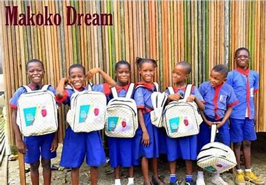

Initiatives & Programs
Our website's initiatives connect charities with donors to ensure every donation
meets real needs. By matching specific charity requests with donor contributions,
we streamline the process and maximize impact, ensuring donations are both targeted
and effective.
MAKOKO DREAM FOUNDATION
The Makoko Dream School is a tuition-free education program serving students who live in
waterfront areas. The school is funded through a Parent/Teacher Association levy and has
served roughly 1,000 children so far. The Makoko Dream School is a school on water, one of
the few schools on water in Makoko – but the only school where the children learn basic
English Language, Arithmetics and Communication in both their native and a foreign language.
The Makoko Dream School Project aims to inspire more children to be in school and learn
relevant skills so that illiteracy will be reduced in Makoko.
Makoko waterside is well known for being a huge community of people vastly neglected by the
seeming developed society surrounding it. The first set of people to settle there were the
Egun people from Badagry; fishermen who survived and thrived on the swamp.The Makoko Dream
is an initiative founded by Emmanuel Agunze that aims to make a Makoko child dare to dream
to be great and not be reduced to the confines of his/her environment. With this in mind,
The Makoko dream have discovered a way to reduce child labour is by education, and so they
have started The Makoko Dream School powered by The Aliyu Foundation project.

There is also a demand for educational materials such as exercise books, textbooks, pencils,
and pens to aid in the learning process. Basic snacks for children, wears
essential for students to participate fully in academic and extracurricular activities.
Additionally, foldable plastic chairs and tables would significantly improve the quality
of schooling by providing more comfortable seating arrangements. First aid boxes are
necessary to ensure health and safety.
BETHESDA HOME FOR THE BLIND
Established to fill societal gaps in supporting individuals living with blindness, we provide
full accommodation, clothing, and training for the blind. Additionally, we sponsor the
education of our beneficiaries up to the university level, empowering them to unlock their
full potential. All of this is made possible through generous donations from the public.
The mission of Bethesda Home for the Blind is to empower visually impaired individuals through
education, vocational training, and community support. The organization envisions a society where
individuals with visual impairments can live independently and contribute meaningfully to their
communities. The home provides rehabilitation services that focus on mobility training, orientation,
and daily living skills. These services are designed to help residents navigate their environments
safely and confidently.
The home also engages with the local community through outreach programs, workshops, and events that
promote understanding and support for visually impaired individuals. This helps to build a network
of support and resources for both residents and their families. Bethesda Home for the Blind continues
to be a beacon of hope and support for visually impaired individuals in Nigeria, striving to create a
more inclusive and supportive environment for all.
THE IREDE FOUNDATION
The IREDE Foundation (TIF) is an NGO focused on encouraging children living with limb loss
(either acquired or congenital) to live a life of fulfillment The Irede Foundation commonly
known as TIF, was established in Nigeria in 2012 to inspire action so child amputees, their
families and caregivers can live independent and limitless lives; through provision of
prosthetic limbs to child amputees from ages 0-18, disability advocacy, support groups for
caregivers, and skills development trainings for PLDs.
The IREDE Foundation is more than just a charity that provides prosthetic limbs; it is a beacon
of hope for children living with limb loss and their families. By addressing both the physical
and emotional challenges of limb loss, the foundation seeks to change the narrative for children
with disabilities, transforming them from victims of circumstance into empowered individuals capable
of achieving their dreams. Through their efforts in prosthetic provision, emotional support, advocacy,
and empowerment, the IREDE Foundation is making significant strides toward a world where every child,
regardless of their physical abilities, can live a dignified, independent, and fulfilling life.
IREDE Foundation focuses on creating long-term, sustainable change for children with limb differences.
As children grow, their prosthetic limbs need to be replaced regularly to match their development. The
foundation is committed to providing continuous support to ensure that each child’s prosthetic needs are
met throughout their childhood, helping them transition smoothly into adulthood. Additionally, the foundation
is actively working on expanding its programs to reach more children across Nigeria and beyond, ensuring that
no child living with limb loss is left without the care and resources they need.
Down Syndrome Foundation Nigeria(DSFN)
A leading non-profit organization committed to improving the lives of individuals with
Down syndrome in Nigeria. Established in 2001, DSFN was founded in response to the lack of
awareness, support, and resources available for individuals with Down syndrome and their
families. Since its inception, the foundation has been a beacon of hope, working to ensure
that people with Down syndrome have access to the education, healthcare, and social inclusion
they need to live fulfilling lives.
Education is one of the most critical areas of focus for DSFN. Individuals with Down syndrome
often have learning difficulties that require specialized education tailored to their needs.
DSFN provides a range of educational programs that cater to the developmental and intellectual
challenges faced by children with Down syndrome. These programs are designed to help children
develop cognitive skills, motor skills, communication abilities, and social interaction skills.
In addition to academic education, the foundation offers *vocational training programs* for young
adults with Down syndrome. These programs aim to equip them with practical skills that can help them
gain employment or engage in entrepreneurship, thereby promoting independence and self-reliance.
The *Down Syndrome Foundation Nigeria* is playing a vital role in reshaping the narrative around Down
syndrome in Nigeria. By providing education, healthcare, vocational training, and advocacy, the
foundation is not only improving the lives of individuals with Down syndrome but also fostering a more
inclusive and supportive society. Through their ongoing efforts, DSFN continues to be a source of
empowerment and hope for individuals with Down syndrome and their families.